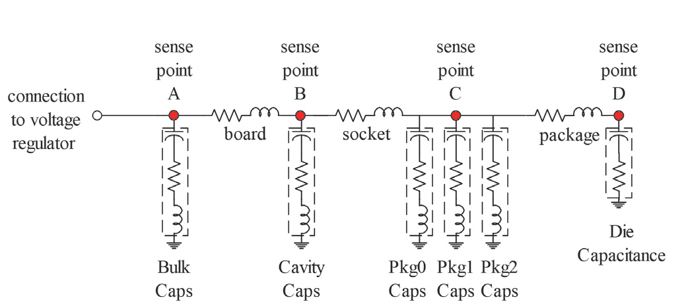
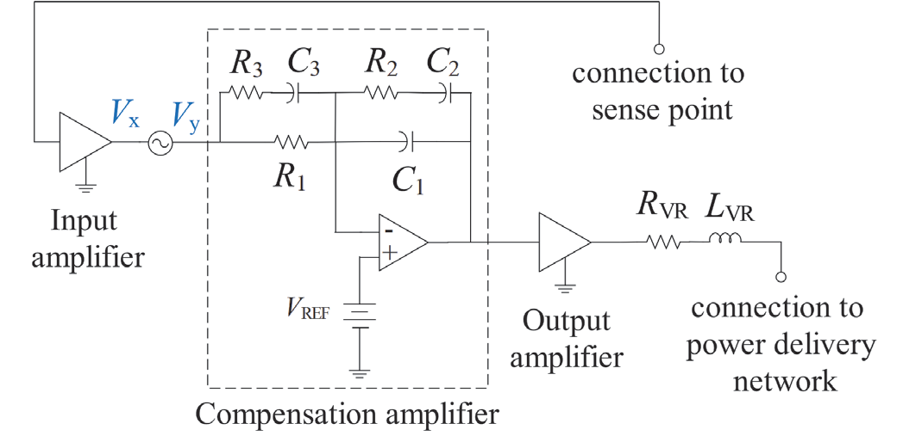
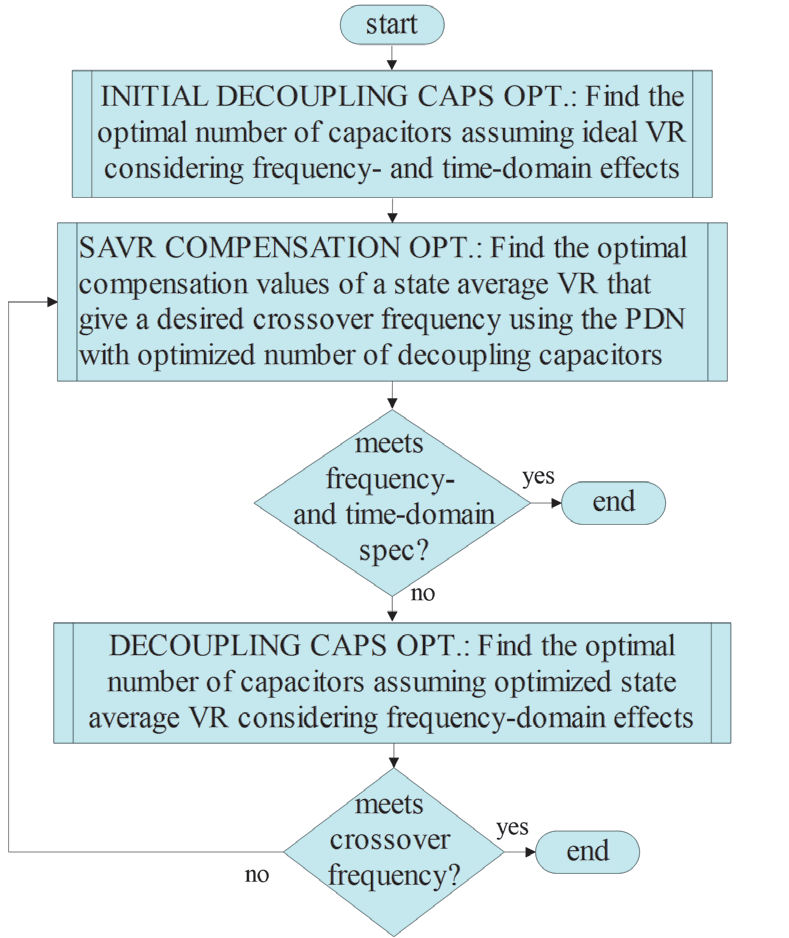
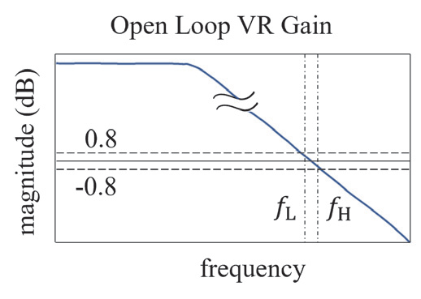
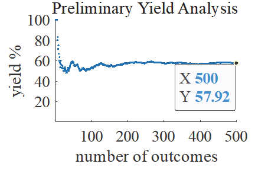

대용량 디커플링 커패시터의 제조 편차까지 고려해 PDN 수율을 체계적으로 최적화하는 방법을 제시한 논문이에요.
고속 컴퓨터 플랫폼에서 전력 전달 네트워크(PDN)는 프로세서, 메모리, 그리고 다양한 액티브 소자에 안정적인 전원을 공급하는 핵심 인프라예요. 전압 조정기(VR)는 PDN의 중심에서 DC 전압 레벨을 조절하고 리플을 허용 범위 내로 유지하는 역할을 해요. 그러나 트랜지스터나 메모리 장치가 빠르게 스위칭할 때 발생하는 순간적인 전류 수요는 전압 강하(voltage droop)를 일으켜 성능 저하 또는 기능 장애로 이어질 수 있어요. 이 문제를 완화하기 위해 디커플링 커패시터가 PDN 곳곳에 배치되어 순간 전류를 공급하고 임피던스 프로파일을 낮추는 역할을 담당해요.
문제는 시중에서 판매되는 디커플링 커패시터의 실제 커패시턴스 값이 공칭값 대비 상당한 제조 편차를 가진다는 점이에요. 특히 세라믹 커패시터(MLCC)는 전압 바이어스, 온도, 주파수 조건에 따라 용량이 크게 달라질 수 있어요. 이런 편차는 단순히 임피던스 프로파일 변동을 넘어 VR 피드백 루프의 안정성에도 영향을 미칠 수 있어요. 따라서 공칭 파라미터만을 기준으로 최적화된 PDN 설계가 실제 양산 환경에서 어느 정도의 수율을 보장하는지 통계적으로 검증하는 과정이 반드시 필요해요.
공칭값 기반 PDN 최적화만으로는 제조 변동성을 고려한 실제 수율을 보장할 수 없어요. 디커플링 커패시터의 큰 허용 오차를 명시적으로 반영한 통계적 수율 추정 및 수율 최적화가 필요하다는 것이 이 논문의 출발점이에요.
논문은 크게 세 단계의 최적화 방법론을 제안해요. 첫째, 벅 컨버터 기반 VR의 보상 파라미터(compensation parameters)를 안정성 기준을 만족하는 방향으로 점진적으로 탐색하는 최적화 절차를 수행해요. 이 과정에서 위상 여유(phase margin), 이득 여유(gain margin) 등 주파수 영역 안정성 지표가 제약 조건으로 사용되어요. 둘째, VR 보상 파라미터가 결정된 상태에서 PDN에 병렬로 배치되는 디커플링 커패시터의 수를 최소화하는 문제를 풀어요. 이때 목표는 주파수 영역 임피던스 프로파일이 목표 임피던스 이하를 유지하고, 시간 영역 최소 전압 드루프도 허용 범위 내에 있는 최소 커패시터 구성을 찾는 것이에요.
셋째 단계에서는 공칭 최적화된 PDN에 대해 디커플링 커패시터 허용 오차를 반영한 몬테카를로(Monte Carlo) 기반 통계 분석을 수행하여 수율을 추정해요. 수율 계산의 관심 응답(response of interest)으로는 임피던스 프로파일, 과도 전압 드루프, VR 안정성 세 가지를 모두 고려해요. 통계 분석 결과를 바탕으로 수율이 불충분하다고 판단될 경우 수율 최적화 루프가 실행되어, 허용 오차 분포를 고려한 설계 파라미터 조정이 이루어져요. 이를 통해 공칭 최적 설계 대비 실제 양산 환경에서의 수율을 높이는 동시에 디커플링 커패시터 수를 최소로 유지하는 균형 잡힌 설계를 달성해요.
주파수 영역(임피던스 프로파일, VR 안정성)과 시간 영역(전압 드루프) 제약을 동시에 만족하는 공칭 최적화를 먼저 수행한 후, 대용량 커패시터 허용 오차에 따른 통계적 수율 분석 및 수율 최적화를 순차적으로 적용하는 계층적 접근 방식이 핵심이에요. 이 방식은 설계 비용(커패시터 수)과 제조 수율을 동시에 최적화할 수 있어요.
논문에서 제시된 실험 결과에 따르면, 공칭 파라미터 기준으로 최적화된 PDN은 디커플링 커패시터의 큰 허용 오차로 인해 수율이 목표치에 미치지 못하는 경우가 발생했어요. 수율 최적화 절차를 적용한 후에는 임피던스 프로파일, 과도 전압 드루프, VR 안정성 세 가지 기준을 모두 만족하는 수율이 유의미하게 향상되었어요. 특히 디커플링 커패시터 허용 오차가 클수록 공칭 최적화와 수율 최적화 간의 성능 차이가 더욱 두드러졌어요. 이 방법론은 설계 초기 단계에서 제조 편차를 예측하고 반영함으로써 재설계 비용과 시간을 절감하는 데 기여해요.
HBM 및 DRAM 기반 메모리 시스템 설계자 관점에서 이 논문은 매우 실질적인 시사점을 제공해요. HBM 스택은 고대역폭 동작 시 급격한 전류 변동을 일으키며, 이때 PDN의 임피던스 프로파일과 전압 드루프 관리가 시스템 안정성에 직결돼요. 특히 HBM 인터포저 레벨에서 배치되는 디커플링 커패시터는 공간 제약과 함께 MLCC의 커패시턴스 편차 문제를 동시에 안고 있어요. 이 논문의 수율 최적화 방법론은 HBM PDN 설계 시 적정 커패시터 수와 배치를 결정하는 데 정량적 근거를 제공할 수 있어요.
또한 벅 컨버터 VR의 보상 파라미터 최적화는 HBM VR 설계에도 직접 적용 가능해요. HBM은 VDDQ, VDD, VINT 등 다수의 전원 도메인을 가지며, 각 도메인의 VR 안정성이 전체 시스템 수율에 영향을 미쳐요. 이 논문처럼 주파수 영역 안정성과 시간 영역 드루프 요건을 통합한 설계 흐름은 HBM 전원 설계의 신뢰성을 높이는 데 유용해요. 나아가 DDR5/LPDDR5 등 차세대 DRAM의 고속 전류 변동 대응 PDN 설계에도 이 방법론을 확장 적용할 수 있어요.
이 논문의 방법론은 벅 컨버터 기반 VR 모델에 초점을 맞추고 있어, 멀티페이즈 VR이나 저전압 LDO 기반 HBM 전원 구조에 직접 적용하려면 모델 확장이 필요해요. 또한 몬테카를로 분석은 샘플 수에 따라 계산 비용이 크게 증가할 수 있으므로, 실제 대규모 PDN에 적용 시 효율적인 샘플링 전략(예: 준몬테카를로, 중요도 샘플링)과의 결합을 검토해야 해요.




